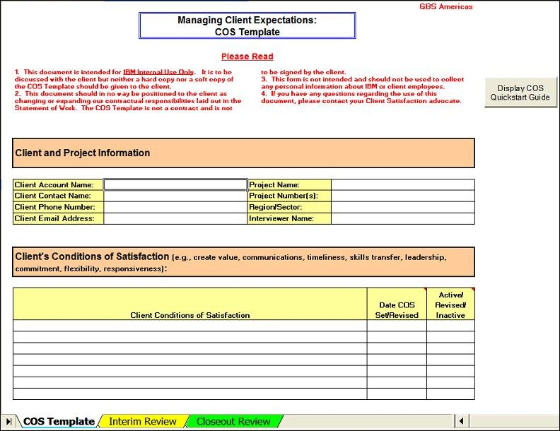
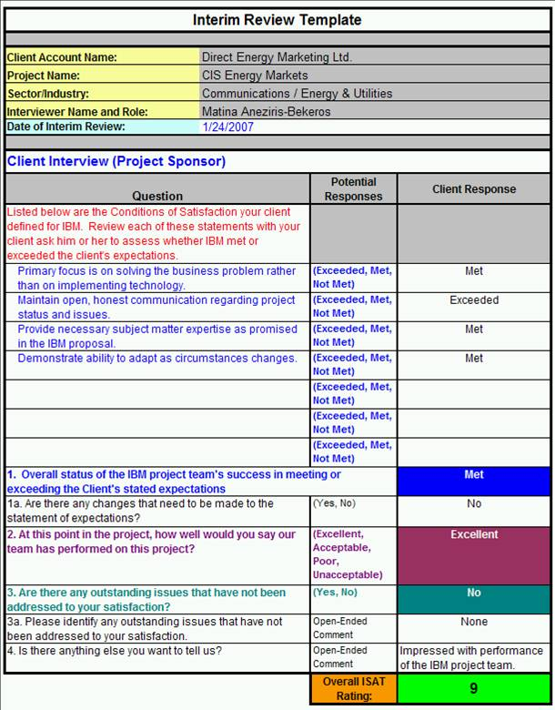
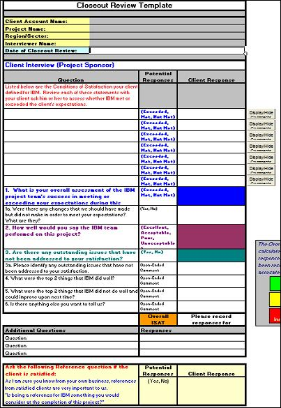

Completing the COS Template
1) Prior to conducting the Start-up COS interview, complete the top portion of the COS Template.
After conducting the Start-up COS interview with the client, record his or her conditions of satisfaction, the date
each condition of satisfaction was set, and the status of the COS statement (Active, Revised, Inactive). The
Active/Revised COS Statements will be automatically populated in the current Interim Review Template and in the
Closeout Review Template.
2) Interim Review dates should be recorded in the COS Template after the completion of each Interim Review.
If a Project Management Review is being done in the upcoming quarter, please be sure to review the results of the
client interview prior to performing the next Interim Review. If any issues/action items were identified in the
PMR, be sure to have a status for the client if not a report to say they have been closed.
Remember that the client's Conditions of Satisfaction might change during the Solution Delivery phase. Adjust the
COS statements in the COS Template accordingly, but keep track of COS statements that have been changed or deleted.
Any COS statements that are no longer pertinent should have their status changed to "Inactive."
As Interim Reviews are conducted, record the dates the Interim Reviews were actually performed in the Interim
Reviews section of the COS Template. Record the Overall ISAT Rating calculated on the Interim Review Template. If
an Action Plan is required (usually because an Overall ISAT Rating was less than 7), then describe the issue that
must be resolved with an action plan.
Be sure to record not only Interim Reviews conducted by the Project Executive/Project Manager, but those conducted
by Risk Managers as part of the client satisfaction component of Project Management Reviews.
3) After the Closeout Review is conducted, record the date of the review in the Closeout Review / End of Engagement
section of the COS Template. Be sure to record the Overall ISAT Rating calculated in the Closeout Review Template.
If an Action Plan is required (usually because an Overall ISAT Rating was less than 7), then describe the issue
that must be resolved with an action plan.
4) The items listed in the COS Checklist section are reminders. The first is to remember to share the COS
statements will all members of the IBM project team. The second and third items relate to the Closeout Review in
which the client should be reminded of the IBM Client Experience Survey (ICES) and the need to identify the correct
client representative to whom the ICES survey should be sent. Confirm that the information in the Client Contact
Name, Client Phone Number, and Client Email Address fields in the Client and Project Information section of the COS
Template is correct.

Completing the Interim Review Template
1) Review the client's expectations (i.e., COS statements) in the Interim Review Template prior to conducting the
interview and record the date of the Interim Review in the top section.
2) During the Interim Review, ask the client to individually assess each COS statement. Then, ask the client to
provide an overall expectation response for question 1. If expectations change, still ask for an assessment on each
of the active/revised COS statements. Schedule follow-up call to discuss new and/or changed expectations.
3) Ask the other questions in the template and record the results. The Overall ISAT rating is automatically
calculated once the responses for questions 1, 2, and 3 have been recorded in the template.
4) Remember the Interim Review Template is IBM Confidential and should not be left with the client.
5) If the client says that their expectations have changed, schedule follow-up meeting to discuss.

Completing the Closeout Review Template
1) Review the client's expectations (i.e., COS statements) in the Closeout Review Template prior to conducting the
interview. Record the date of the Closeout Review in the top section.
2) During the Closeout Review, ask the client to individually assess each COS statement. Then, ask the client to
provide an overall expectation response for question 1. If expectations change, still ask for an assessment on each
of the active/revised COS statements. Schedule follow-up call to discuss new and/or changed expectations.
3) Ask the other questions in the template and record the results. The Overall ISAT rating is automatically
calculated once the responses for questions 1, 4, and 5 have been recorded in the template.
4) Additional questions can be included in the interview, but be sure to get responses for each expectation and
questions 4 and 5.
5) If the client appears to be satisfied, then ask the Reference question and record their response. This response
does not affect the ISAT rating.
6) Document the ISAT rating and any action items in the Closeout Review / End of Engagement section.of the COS
Template.
7) Remember the Closeout Review Template is IBM Confidential and should not be left with the client.

|